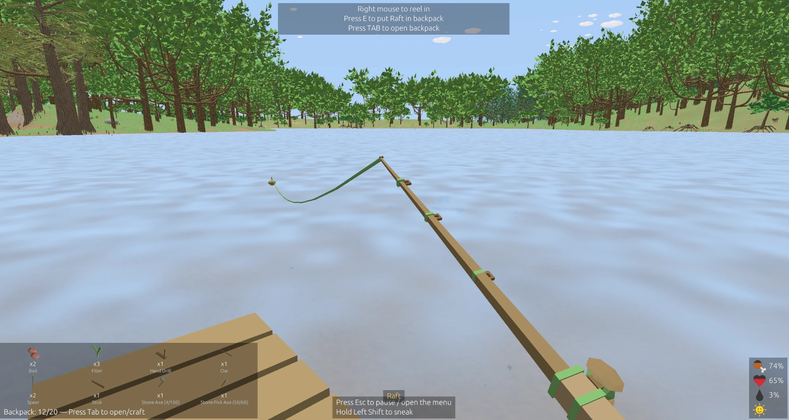
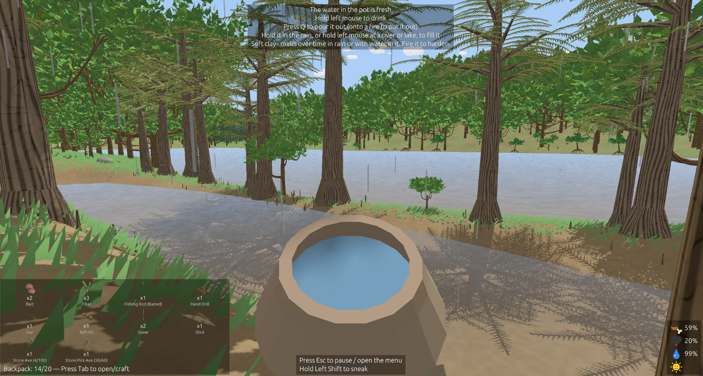
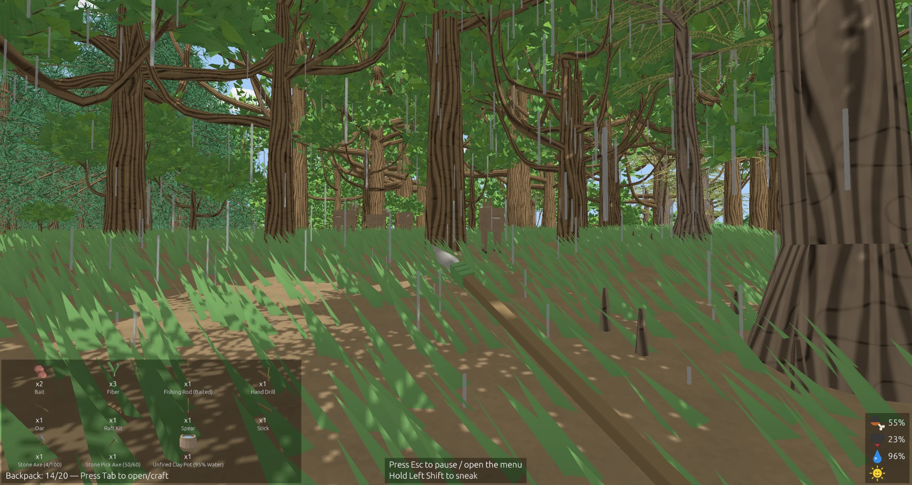
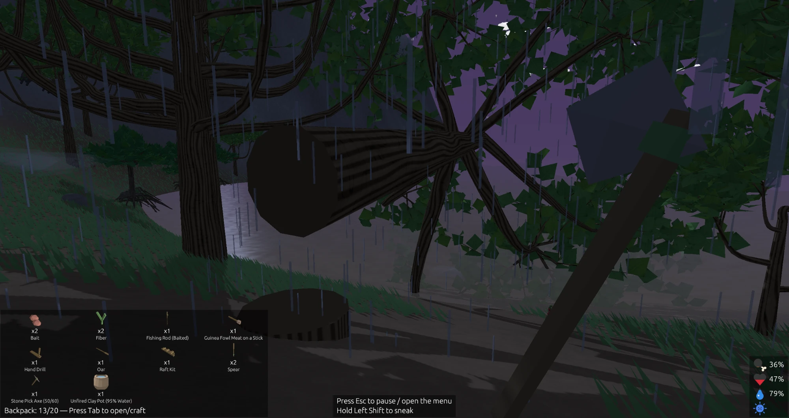
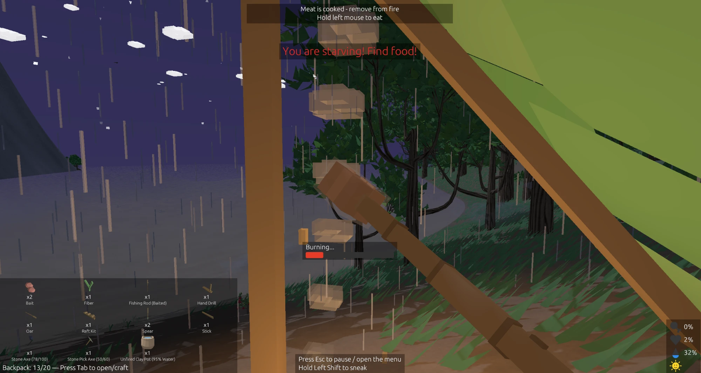

Tap Out
A quiet, hands-on survival game about making a small life in the wild. Gather sticks and fiber, light a fire, cook what you catch, and tuck in under a lean-to while the rain rolls through. No clock, no combat pressure — just a gentle loop of looking after yourself.
Play the latest build on itch.io ↗A slow, cozy loop
You start with nothing but two hands. Pick up sticks, stones, and fiber from the ground, press Tab, and craft your first tools. Everything you own is either in your hands or in a worn backpack, so you're always aware of what you're carrying.
Then the small pleasures: spin a hand drill until a fire catches, hold a skewer of meat over the flames until it turns golden (leave it too long and it burns), and sit warm by the glow after dark. Keep an eye on four little gauges — hunger, health, thirst, and how warm or cold you feel — and the game stays comfortable as long as you do.
Things to do
- Fish. Craft a rod, bait the hook, draw back and cast. Real fish swim up to the bobber, nibble, and either swipe the bait or bite — reel in at the right moment.
- Hunt and cook. Make a bow or spear, track animals through the trees, and bring home meat to roast on a stick. Food spoils, so fresh meals matter.
- Forage. Berries on temperate ground, mushrooms in the cold, prickly pears in the heat. Picked plants grow their fruit back after a couple of days.
- Chop and smash. A stone axe fells even the biggest trees, and a pick axe breaks boulders into stones — the tools wear out, so make a few.
- Build a camp. Lash together a lean-to for shade and shelter from the rain, plant flags to mark where you've been, and set down a basket for extra storage.
- Make a pot. Dig clay, shape a pot, and fill it with water to drink. Fire it hard and it becomes a lasting waterskin; leave a soft one in the rain and it melts back to clay.
- Take to the water. Lash ten sticks and ten fiber into a raft, grab an oar, and drift out across the lake.
A world with weather
The land isn't split into fixed biomes. Erosion, soil, moisture, and temperature all shape what grows where, so you'll find lush forests, dry scrub, cold slopes, and everything between. Rain drifts in over damp country and falls as snow where it's cold; tree canopies and lean-to roofs keep you dry, and standing in a downpour will chill you.
Deer, boar, bears, wolves, elephants, giraffes, eagles, fish, and many more share the world, each moving in its own way. Wind, birdsong, and footsteps fill in the rest — it's meant to be a place you're happy to linger in.
How it's built
Tap Out is written in Rust on a custom wgpu engine: camera, collision, shadows, water, grass, sky, weather, and audio are all hand-written. There are no image textures — every bark, leaf, and fur pattern is generated procedurally in the shader.
Screenshots
Click any screenshot to expand it.






